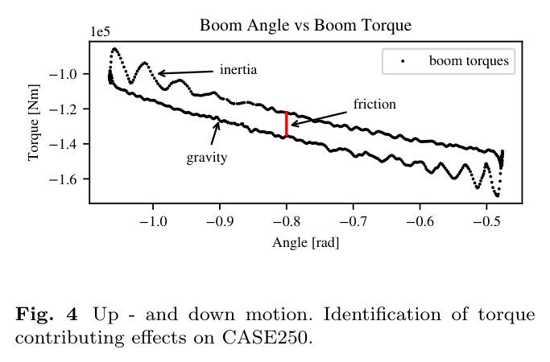
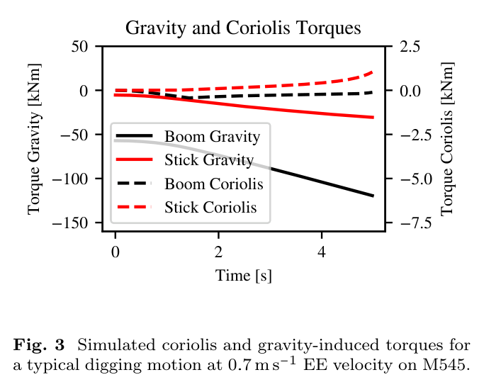
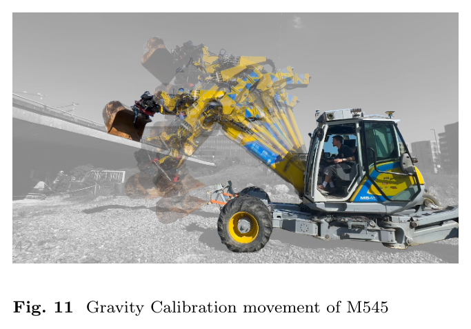
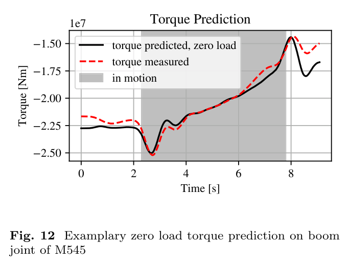
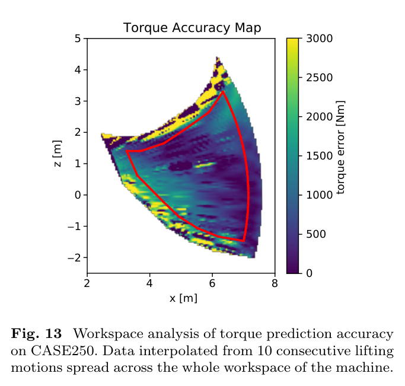

물성을 모두 알아야만
힘을 알 수 있는 것은 아니다
이 연구는 13.5 t 워킹 굴착기와 25 t 크롤러 굴착기에 링크 IMU와 실린더 압력 센서를 사용해, 버킷 페이로드와 말단 힘을 추정한다. 개별 링크의 질량·질량중심·관성을 따로 알아내는 대신, 토크 예측에 필요한 묶음 파라미터(lumped parameters)를 식별한다.
핵심은 보정의 순서다. 실린더 면적, 관성, 마찰, 중력을 차례로 분리하면 앞 단계의 미지수가 다음 단계의 식별을 방해하는 문제를 줄일 수 있다. 보정된 무부하 모델과 압력 기반 측정 토크의 잔차를 이용해 힘은 매 스텝 계산하고, 페이로드는 한 동작 전체에서 추정한다.
두 기체에서 보고한 페이로드 성능은 정격 대비 약 1%의 3σ다. 다만 정지 마찰, 자세별 감도, 가속도 잡음 등의 제약이 남아 있어, 모든 자세와 운전 상태에서 동일한 성능을 보장하는 결과로 읽어서는 안 된다.
개별 물성 대신 식별 가능한 조합
질량과 질량중심을 억지로 분리하지 않는다. 실제 토크에 나타나는 곱과 합을 직접 맞춘다.
서로 다른 자극으로 항을 분리
흔들림은 관성, 상승·하강 간격은 마찰, 자세 변화는 중력 파라미터를 드러낸다.
하나의 잔차, 두 가지 추정
두 관절의 잔차로 평면 힘 벡터를 구하고, 동작 전체의 붐 잔차로 일정한 적재 질량을 찾는다.
분해해서 모든 것을 재는 대신,
움직임 속에서 필요한 것만 알아낸다.
힘 센서가 없는 장비에서
힘 제어를 시작하려면
굴착과 정지 작업에서 필요한 것은 버킷의 위치만이 아니다. 토양을 얼마나 밀고 있는지, 돌이나 관 같은 장애물에 부딪혔는지도 알아야 한다.
그러나 중장비에는 보통 말단 힘을 직접 읽는 센서가 없다. 동역학으로 대신 계산하려 해도 링크의 질량과 관성이 필요하며, 실차를 분해해 측정하거나 제조사 자료를 확보하기는 어렵다. 실용적인 추정기는 운전자에게 늘 천천히 움직이거나 특정 자세에서 멈추라고 요구해서도 안 된다.
| 접근 | 노트에 언급된 대표 연구 | 주요 제약 |
|---|---|---|
| 정적 토크 경험식 | Bennett, 2014 · 관련 특허 | 관성·동적 토크를 무시해 가속 중 오차가 커진다. |
| 선형회귀 페이로드 | Renner et al., 2020 | 링크 질량·관성에 대한 사전지식이 필요하다. |
| 유압 포함 상태추정 | Pyrhönen, 2023 · Khadim, 2022 | 1축에 한정되거나 유압 구성의 사전지식이 필요하다. |
| 묶음 파라미터 | Ferlibas & Ghabcheloo, 2021 | 두 관절 토크의 차를 이용하는 방식으로, 힘 벡터 복원에 제약이 있다. |
| 데이터 기반 힘 추정 | Shen, 2025 등 | 학습에 필요한 실측 힘 데이터를 중장비에서 얻기 어렵다. |
본 연구의 기여는 궤적·가속·선회를 고려하는 무부하 토크 모델, 분해 없이 수행하는 단계별 식별, 그리고 임베디드 환경에서 동작하는 힘·페이로드 추정기를 하나의 절차로 연결한 데 있다. 개조형 적용을 지향하지만, 실제 검증 범위는 두 시험 기체와 보고된 실험 조건이다.
압력을 읽고, 기하로 토크를 만든다
추정의 출발점은 두 개의 경로다. 압력과 기구학으로 실제 관절 토크를 계산하고, IMU로 읽은 운동 상태를 모델에 넣어 무부하 토크를 예측한다. 두 값의 차이가 외부 하중을 설명할 단서가 된다.
실차 두 대, 센서는 링크와 챔버에

| 항목 | 구성 및 처리 |
|---|---|
| 각도·각속도 | Leica iCON, 링크별 MSS40x IMU. 수집 주파수 50 Hz. |
| 각가속도 | 최근 5점에 대한 1차 적합으로 각속도를 미분. 다른 신호는 5점 평균으로 위상을 정렬한다. |
| 압력 | Wika P30. 붐·스틱 실린더의 양 챔버에 직결. |
| 기하 | 링크 길이와 실린더 핀 거리는 줄자로 측정한다. |
| 버킷 관절 | 짧은 지렛대로 토크 추정이 부정확하고, 연구가 다루는 굴착 동작에서 드물게 움직여 관절 토크를 사용하지 않는다. |
가상일이 연결하는 압력과 회전

읽기 편하도록 식 (2), (3)의 같은 각도 표기를 Θb로 통일했다. 제공 노트에서는 각각 Θboom과 β로 표기되어 있다.
| 기호 | 의미 |
|---|---|
| p₁, p₂ | 플런저측·로드측 챔버 압력 |
| Ap, Ar | 플런저 면적, 로드 단면적 |
| a, c, b | 관절축에서 두 실린더 핀까지의 거리 a, c와 핀 사이 길이 b |
| η | 관절각 변화당 실린더 길이 변화. 유효 지렛대에 해당한다. |
복잡한 장비를
식별 가능한 묶음으로 줄이기
측정 토크에는 팔 자체를 움직이는 데 필요한 토크와 외력에 대응하는 토크가 함께 들어 있다. 무부하 모델은 이 중 팔 자체의 기여를 설명한다.
{kind=link}

{kind=link}

① 중력: 질량과 질량중심의 곱만 남긴다
준정적 토크에서는 질량 m과 질량중심 좌표를 따로 구분할 수 없다. 관측되는 것은 m·cog와 같은 곱이다. 연구는 이를 링크당 두 개의 묶음으로 표현한다.
b, s, bu는 각각 붐, 스틱, 버킷을 뜻한다. 원식 (6)~(12)의 개별 물성 전개는 생략하고, 토크 예측에 사용하는 묶음 형태를 정리했다.
| 묶음 | 포함되는 물리량 |
|---|---|
| πbg,1 | −g(mboomcogboom,x + msticklboom + mbucketlboom). 붐 자체의 질량중심뿐 아니라 뒤 링크 질량도 섞인다. |
| πbg,2 | −g mboomcogboom,z |
| πbg,3, πbg,4 | 스틱의 질량중심 곱과 버킷 질량 × 스틱 길이 |
| πbg,5, πbg,6 | 버킷의 질량중심 곱 |
② 관성: 상수와 자세 의존 항을 분리한다
평행축 정리로 전개하면 자세와 무관한 항은 상수 하나로 묶인다. 링크 자세에 따라 회전축까지 거리가 변하는 항만 사인·코사인 조합으로 남는다.
③ 마찰: 속도보다 하중과 방향을 본다
실험에서는 마찰이 속도 크기에 거의 의존하지 않고 측정 토크에 비례하는 경향을 보였다. 압력이 높아질수록 패킹·윤활·유압 관련 마찰이 커진다는 해석이다. 상승과 하강에 각각 기울기와 절편을 두므로 관절당 네 개의 계수가 필요하다.
이는 보편적인 마찰 법칙의 선언이 아니라, 해당 장비와 시험 조건에서 채택한 경험 모델이다. 특히 정지 마찰은 이 식이 설명하지 않는다.
④ 선회 원심항: 중력 묶음을 다시 활용한다
중력 묶음의 사인·코사인 관계를 활용해 횡방향 가속에 따른 토크를 근사하고, 오차는 스케일 계수 πc로 보정한다. 이 계수는 선회가 포함된 데이터 한 세트로 식별한다.
설명되지 않은 토크에서
외부 하중을 읽는다
보정된 모델이 팔 자체의 토크를 충분히 설명한다면, 남은 토크는 외력을 추정하는 데 사용할 수 있다. 하지만 모델 오차와 센서 오차도 잔차에 포함되므로, 잔차 전체가 순수한 외력이라고 보장되지는 않는다.
식 (23)의 부호는 제공 노트의 표기를 유지했다. 구현할 때는 잔차를 빼는 순서와 외력의 작용 방향·좌표계 정의를 함께 확인해야 한다. 힘 복원은 해당 2×2 야코비안이 역행렬을 갖는 자세를 전제로 한다.
| 추정 대상 | 입력 | 방법 | 실행 단위 |
|---|---|---|---|
| 평면 말단 힘 벡터 | 붐·스틱의 토크 잔차 | 2×2 야코비안 역전치로 대수 계산 | 매 스텝 · O(1) |
| 페이로드 질량 | 한 동작 전체의 붐 잔차와 운동 상태 | mpl 하나에 대한 Nelder–Mead 최적화 | 동작당 1회 · 평균 0.4 s |

페이로드는 순간마다 바뀌는 값이 아니라,
한 동작을 함께 설명하는 하나의 질량이다.
하나의 동작에서 적재 질량이 일정하다는 가정을 활용하면 개별 시점의 가속도 잡음에 덜 민감해질 수 있다. 그렇다고 정지 마찰 문제가 자동으로 사라지는 것은 아니다. 추정에 사용할 구간의 선택과 모델 적용 조건은 여전히 중요하다.
30분 보정의 비밀은 순서에 있다
한 번에 모든 파라미터를 맞추지 않는다. 다른 물리 효과와 구분되는 실험을 만들고, 이미 식별한 항을 빼면서 다음 항으로 넘어간다.

- 플런저 면적 Ap · 알려진 하중으로 압력의 척도 맞추기
추가 없는 경우와 있는 경우의 준정적 겹침 구간을 비교한다.
- 관성 πI · 0.5~3 Hz 흔들림 성분 지우기
급가속과 약 10회 왕복으로 자극하고, 잔차의 대역 PSD를 최소화한다.
- 마찰 πf · 상승·하강 토크 간격 읽기
네 자세에서 왕복을 반복해 운동 방향별 마찰과 하중의 관계를 적합한다.
- 중력 πg · 넓은 작업영역을 훑기
관성과 마찰을 제거한 토크를 중력 회귀식에 최소제곱으로 적합한다.
1단계 — 밖에서 잴 수 없는 플런저 면적
같은 자세를 추 없이, 그리고 알려진 추를 매단 상태로 통과하면 팔 자체의 토크는 차분에서 상쇄되고 추가 하중의 토크가 남는다. 이를 이용해 실린더 내부의 플런저 면적을 역산한다.
w는 추를 단 상태, wo는 추가 없는 상태다. |r|과 Θm은 추의 중력 토크를 계산하는 기하 항이다.

2단계 — 관성만 드러나는 주파수 대역
준정적인 중력·마찰 변화는 저주파에, 차체 흔들림은 0.5~3 Hz에 주로 나타난다는 점을 이용한다. 관성 토크를 제거한 잔차에서 이 대역의 에너지가 가장 작아지도록 파라미터를 조정한다.
제공 노트는 S를 푸리에 변환 기호로 줄여 적었다. 여기서는 “잔차의 대역 파워를 최소화한다”는 설명에 맞춰 PSD로 구분해 표기했다.

3단계 — 왕복 궤적의 간격으로 마찰 식별


4단계 — 마지막에 중력 회귀
앞서 식별한 관성과 마찰을 빼고 나면 자세에 따른 중력 토크가 남는다. 팔을 접은 자세부터 펼친 자세까지 충분히 훑어 중력 묶음을 최소제곱으로 구한다.
{kind=link}

# 개념을 설명하기 위한 의사코드
A_p = mean(eq29(overlap(logs.wo, logs.w)))
pi_I = argmin(band_psd(tau_m - I(pi) * thdd, 0.5, 3.0))
pi_f = fit_gap_vs_torque(tau_m - I(pi_I) * thdd)
pi_g = lstsq(
gravity_regressor(th),
tau_m - inertia - friction
)실행 가능한 구현이 아닌 절차 요약이다. 실제 적용에는 동기화, 압력 단위, 운동 방향, 구간 선택, 좌표계 정의가 필요하다. 선회 원심항의 πc는 선회 데이터로 별도 식별한다.
‘1%’의 성과를
정확한 분모와 함께 읽기
모델은 움직이는 팔의 토크를 잘 설명했고, 동작 전체를 이용한 페이로드 추정은 비교 방법보다 작은 오차와 산포를 보였다. 수치의 의미는 평가 구간과 기준을 함께 읽을 때 분명해진다.
무부하 토크: 운동 중에는 맞고, 정지하면 벌어진다
{kind=link}

{kind=link}

평균 644 N·m는 6 m 리치에서 약 11 kg의 중력 하중에 해당한다. 다만 이 중력 토크 오차 평가는 정지·급가속 구간을 제외한 결과다.
페이로드: 580 kg 추를 52회 측정

| 방법 | 오차 | 표준편차 σ |
|---|---|---|
| 준정적 방법 | 264.7 kg | 2,263 kg |
| 상용 방법 | 101.7 kg | 51.3 kg |
| 본 연구 | 5.7 kg | 30.4 kg |

| 실행 지표 | 보고 결과 |
|---|---|
| 평균 최적화 시간 | 0.4 s |
| 최대 최적화 시간 | 1.4 s |
| 작업 주기와의 비교 | 약 30 s 굴착 사이클에 비해 짧다. 매 센서 샘플마다 질량 최적화를 완료한다는 뜻은 아니다. |
말단 힘: 방향은 복원되지만 오차는 남는다
{kind=link}
| 지표 | 결과 | 해석 |
|---|---|---|
| 힘 크기 | 평균 6,183 N 표준편차 452 N | 중력 기준 참값 대비 평균 +8.7% |
| 힘 방향 | 평균 오차 13° 표준편차 9.2° | 방향 정보는 얻지만 정밀한 힘 계측과는 구분해야 한다. |
잘 맞는 모델의 바깥에는
무엇이 남아 있는가
이번 결과는 개조형 동역학 식별의 가능성을 보여준다. 실제 힘 제어로 이어가려면 모델이 설명하지 못하는 상태와 검증의 빈틈을 함께 관리해야 한다.
- 정지 마찰정지 구간은 현재 마찰 모델로 설명하지 못해 추정에 사용하기 어렵다.
- 유압유 이동유압유가 실린더를 드나들면서 링크 질량중심을 바꾸는 효과를 모델링하지 않는다.
- 측정과 모델 근사자이로 미분 가속도의 잡음, 평지 가정, 팔 관절 코리올리 생략, 버킷 관절 토크 미사용이 남는다.
- 검증 범위제공 노트 기준으로 명시적인 홀드아웃 분할과 파라미터 신뢰구간이 제시되지 않았다. 두 기체의 결과를 다른 장비로 옮길 때는 재검증이 필요하다.
- 재현성노트는 코드·데이터를 비공개로 기록한다. 독립 구현과 재현에는 논문의 정의·절차를 추가로 확인해야 한다.
다음 연구가 이어질 네 방향
이 개선들이 향하는 응용은 말단 임피던스 제어와 지하 충돌 인지 굴착이다. 현재의 매단 추 평가가 곧바로 토양 접촉이나 지하 장애물 인지 성능을 입증하는 것은 아니다.
HR35에 옮긴다면,
첫걸음은 압력의 의미를 확인하는 일
HR35가 이미 가진 경사계·실린더 압력 센서는 이 연구의 구성과 가깝다. 그러나 압력 보정, 센서 위치, 실린더 면적이 아직 확정되지 않았다면 같은 방법을 바로 적용할 수는 없다.
가장 먼저 가져올 방법: 실린더 면적 식별
식 (29)는 알려진 추로 실린더 면적을 추정한다. 버킷 보어가 두 규격 사이에서 불확실한 문제를 사양서 없이 좁힐 수 있는 후보 방법이다. 전제는 압력 카운트→bar 변환 확인, 로드 지름 실측, 유효한 압력 측정 위치와 기하 정보다.
트윈에 남길 것은 유일한 물성이 아닌 가능한 배치
이 방법으로도 링크 질량과 질량중심은 곱으로 식별된다. 디지털 트윈의 개별 질량·질량중심은 “실험과 모순되지 않는 한 가지 배치”로 관리해야 한다. 토크를 잘 설명하는 파라미터와 실제 개별 물성의 식별은 다른 목표다.
센서와 마찰 모델은 실험으로 판정
원노트는 20 Hz 경사계의 한계를 지적하고 링크 IMU 추가를 제안한다. 다만 20 Hz라는 샘플링 수치만으로 0.5~3 Hz 식별이 불가능하다고 단정할 수는 없다. 실제 대역폭, 내부 필터, 지연, 가속도 오염을 확인해야 한다. HR35의 약 3 Hz 계통 모드와 식별 대역이 겹친다는 점도 함께 검토할 사안이다.
마찰도 경쟁 가설로 다뤄야 한다. 연구의 하중 비례·방향 비대칭 모델은 트윈의 쿨롱+점성 구조와 다르다. 여러 하중과 속도에서 상승·하강 토크 간격을 그려 어느 설명이 실제 데이터를 더 잘 예측하는지 비교할 수 있다.
첫 시험 전 확인 목록
- 압력 센서가 실린더 챔버를 직접 측정하는지 위치를 확인한다.
- 압력 원시값의 변환식과 단위를 확정한다.
- 로드 지름과 실린더 핀·링크 기하를 실측한다.
- 추 유무 비교에서 동일 자세·운동 방향·준정적 구간을 확보한다.
- 관성 식별 전에 경사계의 실제 대역폭과 IMU 필요성을 검증한다.
중요한 것은 센서의 수보다,
무엇을 분리해 측정할 수 있는가다
이 논문의 가장 실용적인 성과는 개별 링크 물성을 몰라도 토크 예측에 필요한 정보를 실차에서 얻을 수 있다는 점이다. 압력과 기하를 연결하고, 운동을 설계해 관성·마찰·중력을 차례로 드러낸다.
실제 적용에서는 먼저 압력의 척도와 위치를 확인하고, 알려진 하중으로 토크 환산을 검증할 수 있다. 그 기반이 갖춰졌을 때, 30분의 보정은 하중 추정에서 힘 제어로 나아가는 출발점이 된다.
출처와 읽기 메모
-
리뷰 대상 논문
Lennart Werner, Pol Eyschen, Sean Costello, Pierluigi Micarelli, Marco Hutter. Calibrated Dynamic Modeling for Force and Payload Estimation in Hydraulic Machinery. Construction Robotics, 2025.
DOI: 10.1007/s41693-025-00169-7 · 읽은 판: arXiv:2510.11574v1 -
이 글의 근거 범위
제공된 Obsidian 논문 요약과 적용 메모를 편집·재구성했다. 원문에 대한 별도의 재검증이나 실험 재현을 수행한 글은 아니다. 연구 수치와 제한 사항은 제공 노트에 근거하며, 기존 연구 비교 역시 노트의 정리를 따른다. -
그림·표 및 식 번호
그림 1~15와 표 1~2는 제공된 로컬 이미지다. 원문 번호를 유지했으며, 설명 흐름에 맞춰 그림 4를 그림 3보다 먼저 배치했다. 캡션은 제공 노트의 설명을 편집한 것이다. 식은 필요한 항 중심으로 정리했고, 축약·표기 정리는 해당 위치에 표시했다. -
결과와 해석의 구분
페이로드의 약 1%는 3σ/정격 기준이다. 힘 크기의 초록·본문 수치 불일치는 해소되지 않은 읽기 메모로 남겼다. HR35 관련 내용은 논문의 검증 결과가 아닌 적용 가설이며, 센서 대역폭에 관한 문장은 샘플링 주파수와 실제 센서 응답을 구분하도록 보완했다.